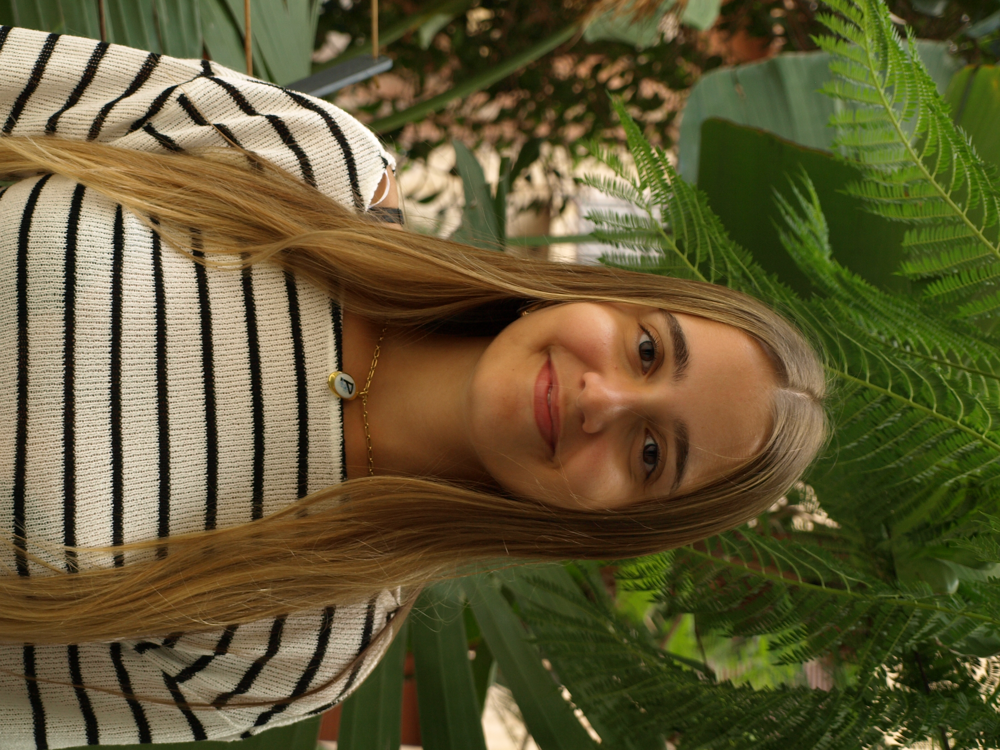

About me
I am a Computer Engineering student currently doing my Erasmus exchange. I am from Barcelona, Spain, and I am currently living in Bologna, Italy, studying at the University of Bologna. I am especially interested in software development and web development, particularly frontend development. In the future, I would like to work at a company as a web or app developer.
